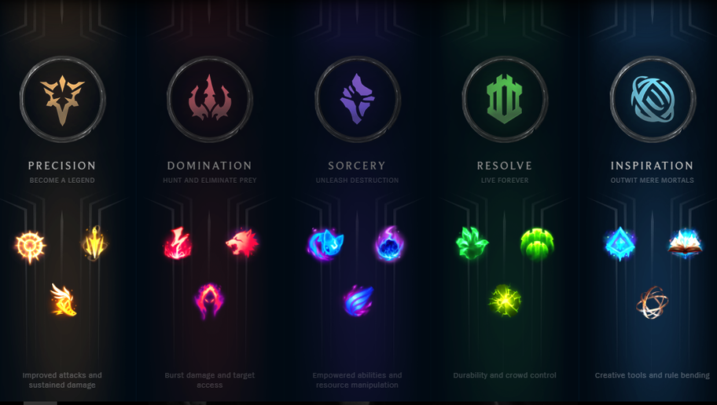
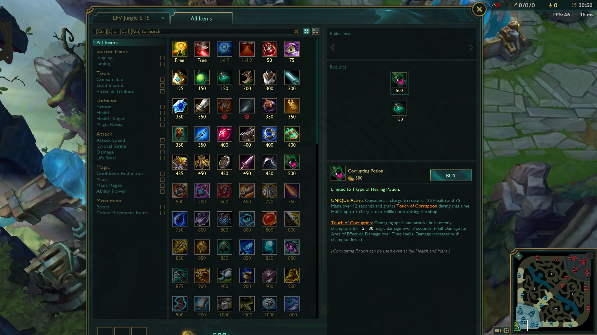

A key aspect of League of Legends are runes and items. Runes grant players extra survivability, damage, or utility in a game. There are five rune trees to chose from: Precision, Domination, Sorcery, Resolve, and Inspiration.
| Rune Tree | Granted Abilities |
|---|---|
| Precision | Improved sustain damage and auto attacks |
| Domination | Burst damage and target access |
| Sorcery | Improved abilities and resource manipulation |
| Resolve | Durability and crowd control |
| Inspiration | Rule bending and creative tools |
Players can only choose one main rune path and one secondary rune path. Each rune tree has three keystones and nine secondary runes. You can only choose one keystone and three secondary runes. There is also a secondary rune tree where you can choose two secondary runes from another tree (Preseason Update, n.d.). Runes must be configured before a game has begun. After the game has started, runes cannot be reconfigured.
Another very important aspect of League of Legends are items. Items are bought in game using gold, the currency in League of Legends and you can only have six items at a time. Gold can be obtained generally by killing enemy champions, farming minions, and destroying turrets. To buy items, you have to be on the summoners platform of your team, the place you spawned on. An easy way to get there is by recalling. Items build on to each other until they have become a full item. This means that you don't have to save up all the gold to buy one completed item. Items give players more damage, survivability, and utility, much runes. Most items also grant champions passive, active, or both abilities. Passive abilities are constant and don't need to be activated. Active abilities are like normal abilities but instead, they are activated from the item box.
 